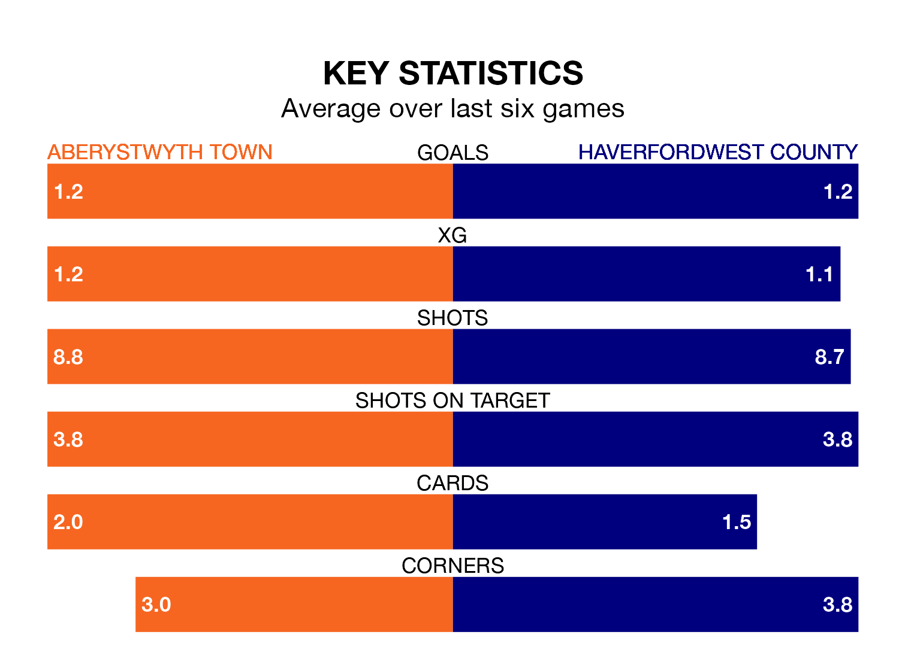

Aberystwyth Town are on a poor run ahead of hosting Haverfordwest County at Park Avenue on Friday, with just four points collected from their last six games.
The Seasiders have picked up one win and one draw in their last six Welsh Premier League games, and face a Bluebirds side whose last six games have brought two wins and two draws.
Aberystwyth are 11th in the table after 22 games, of which they have won four and drawn three, earning 15 points.
Haverfordwest are three places ahead of Town in eighth, with seven wins and seven draws putting them on 28 points.
In the last 10 years, Aberystwyth and Haverfordwest have played each other on 18 occasions. They won seven each, and they drew four times.
On average, the Seasiders scored 1.1 goals and the Bluebirds 1.4 in those matches.
Their last meeting was on December 30, when they played out a 1-1 draw.
With 18 goals in 22 games so far this season, the Seasiders are the league's second-lowest scorers with 0.8 goals per game. And they are conceding more than average, letting in 46 goals at a rate of 2.1 per game.
County are also below average scorers, with 1.3 goals per game, compared to a league average of 1.5. They have conceded 1.5 goals per game.
Aberystwyth's last match was on January 13, a 4-2 loss against Barry Town United, with John Owen and Jonathan Evans getting the goals for the Seasiders.
Haverfordwest lost 3-2 against Bala Town last time out, also on January 13, with Ben Fawcett and Martell Taylor-Crossdale on the scoresheet.
Updated: 09:18 (UTC), 23/01/24